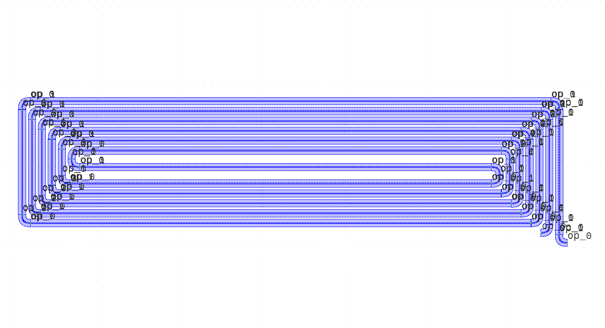

Module gpdk.components.spiral.spiral
Expand source code
import math
from dataclasses import dataclass
from typing import Tuple, List
from fnpcell import all as fp
from gpdk.technology import get_technology
from gpdk.technology.interfaces import CoreCladdingWaveguideType
from gpdk.components.bend.bend_euler import BendEuler90
@fp.pcell_class()
@dataclass(eq=False)
class Spiral(fp.PCell):
"""
Attributes:
bend_radius: defaults to 5
min_straight: defaults to 0
spacing: defaults to 6
total_length: defaults to 4000.0
n_o_loops: defaults to 5
waveguide_type: type of waveguide
port_names: defaults to ["op_0", "op_1"]
Examples:
```python
TECH = get_technology()
spiral = Spiral(total_length=2000, n_o_loops=6, waveguide_type=TECH.WG.FWG.C.WIRE)
fp.plot(spiral)
```

"""
bend_radius: float = fp.PositiveFloatParam(default=5).as_field()
min_straight: float = fp.FloatParam(default=0).as_field()
spacing: float = fp.PositiveFloatParam(default=6).as_field()
total_length: float = fp.PositiveFloatParam(default=4000.0).as_field()
n_o_loops: int = fp.IntParam(default=5).as_field()
waveguide_type: CoreCladdingWaveguideType = fp.WaveguideTypeParam(doc="Waveguide parameters").as_field()
port_names: fp.IPortOptions = fp.PortOptionsParam(count=2, default=["op_0", "op_1"]).as_field()
def _default_waveguide_type(self):
return get_technology().WG.FWG.C.WIRE
def _get_spiral_inner_shape(self, hor_straight: float):
r = self.bend_radius
ms = self.min_straight
sp = self.spacing
points = [
(0, -2 * sp),
(0, 3 * r + 2 * ms - sp),
(-2 * r - hor_straight - sp, 3 * r + 2 * ms - sp),
(-2 * r - hor_straight - sp, r + ms - sp),
(-sp, r + ms - sp),
(-sp, -r - sp),
(-2 * r - hor_straight - 2 * sp, -r - sp),
(-2 * r - hor_straight - 2 * sp, 3 * r + 2 * ms),
(sp, 3 * r + 2 * ms),
(sp, -3 * sp),
]
return points[::-1]
def _get_spiral_loop_shape(self, ver_loop: float, hor_loop: float):
r = self.bend_radius
sp = self.spacing
points = [
(0, 0),
(0, ver_loop + r),
(-2 * r - hor_loop - 2 * sp, ver_loop + r),
(-2 * r - hor_loop - 2 * sp, -r + 2 * sp),
(-2 * sp, -r + 2 * sp),
(-2 * sp, 2 * sp),
]
return points
def _get_spiral_end_shape(self):
r = self.bend_radius
points = [
(0, 0),
(0, -r),
(-r, -r),
]
return points
def generate_waveguides(self, hor_straight: float):
bend = BendEuler90(
radius_eff=self.bend_radius,
slab_square=False,
waveguide_type=self.waveguide_type,
)
def bend_factory(central_angle: float):
if abs(central_angle) != math.pi / 2:
raise NotImplementedError()
# if abs(central_angle) % (math.pi / 2) != 0:
# raise NotImplementedError()
result = bend if central_angle > 0 else bend.v_mirrored()
return result, bend.raw_curve.radius_eff, ("op_0", "op_1")
loops: List[fp.IWaveguideLike] = []
inner_shape = self._get_spiral_inner_shape(hor_straight=hor_straight)
loops.append(fp.LinkSmooth(inner_shape, link_type=self.waveguide_type, bend_factory=bend_factory))
for i in range(self.n_o_loops - 1):
hor_loop = hor_straight + 2 * i * self.spacing + 3 * self.spacing
ver_loop = 2 * self.bend_radius + 2 * self.min_straight + 2 * i * self.spacing + 5 * self.spacing
shape = self._get_spiral_loop_shape(hor_loop=hor_loop, ver_loop=ver_loop)
new_loop = fp.LinkSmooth(shape, link_type=self.waveguide_type, bend_factory=bend_factory)
if i == 0:
new_loop = fp.place(new_loop, "op_1", at=loops[-1]["op_1"])
else:
new_loop = fp.place(new_loop, "op_1", at=loops[-2]["op_0"])
loops.append(new_loop)
end_shape = self._get_spiral_end_shape()
end_wg = fp.LinkSmooth(end_shape, link_type=self.waveguide_type, bend_factory=bend_factory)
end_wg = fp.place(end_wg, "op_1", at=loops[-1]["op_0"])
start_wg = fp.LinkSmooth(end_shape, link_type=self.waveguide_type, bend_factory=bend_factory).h_mirrored()
if self.n_o_loops < 2:
start_wg = fp.place(start_wg, "op_1", at=loops[-1]["op_1"])
else:
start_wg = fp.place(start_wg, "op_1", at=loops[-2]["op_0"])
loops.append(start_wg)
loops.append(end_wg)
return loops
def build(self) -> Tuple[fp.InstanceSet, fp.ElementSet, fp.PortSet]:
insts, elems, ports = super().build()
loops = self.generate_waveguides(hor_straight=0)
length = 0
for loop in loops:
length += loop.curve.curve_length
length_diff = self.total_length - length
if length_diff < 0:
raise ValueError("total_length of spiral is too short.")
hor_straight = length_diff / (2 * self.n_o_loops + 2)
loops = self.generate_waveguides(hor_straight=hor_straight)
length = 0
for loop in loops:
length += loop.curve.curve_length
if abs(self.total_length - length) > 1e-3:
raise ValueError("Spiral did not take specified length!")
insts += loops
ports += loops[-1]["op_0"].with_name(self.port_names[1])
ports += loops[-2]["op_0"].with_name(self.port_names[0])
return insts, elems, ports
if __name__ == "__main__":
from pathlib import Path
import gpdk.components.all
gds_file = Path(__file__).parent / "local" / Path(__file__).with_suffix(".gds").name
library = fp.Library()
TECH = get_technology()
# =======================================================================
spiral = Spiral()
from gpdk.components import all as c
s = c.Straight()
s0 = s.translated(-100, -200)
s1 = s.translated(-300, -400)
links = fp.create_links(
specs=[
s0["op_1"] >> spiral["op_0"],
s1["op_1"] >> spiral["op_1"],
]
)
library += fp.Device(name="spiral", content=[s0, s1, spiral, links], ports=[])
# library += Spiral(total_length=2000, n_o_loops=2, waveguide_type=TECH.WG.FWG.C.WIRE)
library += Spiral(total_length=2000, n_o_loops=6, waveguide_type=TECH.WG.FWG.C.WIRE)
# =============================================================
fp.export_gds(library, file=gds_file)
fp.export_pls(library, file=gds_file.with_suffix(".pls"), components=gpdk.components.all)
# fp.plot(library)Classes
class Spiral (name: str = None, bands: Optional[FrozenSet[fnpcell.interfaces.IBand]] = None, patches: Tuple[fnpcell.interfaces.IElement, ...] = (), port_names: Sequence[Union[None, str, fnpcell.interfaces.Hidden]] = ('op_0', 'op_1'), transform: fnpcell.transform.Affine2D = None, bend_radius: float = 5, min_straight: float = 0, spacing: float = 6, total_length: float = 4000.0, n_o_loops: int = 5, waveguide_type: CoreCladdingWaveguideType = None)-
Attributes
bend_radius- defaults to 5
min_straight- defaults to 0
spacing- defaults to 6
total_length- defaults to 4000.0
n_o_loops- defaults to 5
waveguide_type- type of waveguide
port_names- defaults to ["op_0", "op_1"]
Examples:
TECH = get_technology() spiral = Spiral(total_length=2000, n_o_loops=6, waveguide_type=TECH.WG.FWG.C.WIRE) fp.plot(spiral)
Expand source code
class Spiral(fp.PCell): """ Attributes: bend_radius: defaults to 5 min_straight: defaults to 0 spacing: defaults to 6 total_length: defaults to 4000.0 n_o_loops: defaults to 5 waveguide_type: type of waveguide port_names: defaults to ["op_0", "op_1"] Examples: ```python TECH = get_technology() spiral = Spiral(total_length=2000, n_o_loops=6, waveguide_type=TECH.WG.FWG.C.WIRE) fp.plot(spiral) ```  """ bend_radius: float = fp.PositiveFloatParam(default=5).as_field() min_straight: float = fp.FloatParam(default=0).as_field() spacing: float = fp.PositiveFloatParam(default=6).as_field() total_length: float = fp.PositiveFloatParam(default=4000.0).as_field() n_o_loops: int = fp.IntParam(default=5).as_field() waveguide_type: CoreCladdingWaveguideType = fp.WaveguideTypeParam(doc="Waveguide parameters").as_field() port_names: fp.IPortOptions = fp.PortOptionsParam(count=2, default=["op_0", "op_1"]).as_field() def _default_waveguide_type(self): return get_technology().WG.FWG.C.WIRE def _get_spiral_inner_shape(self, hor_straight: float): r = self.bend_radius ms = self.min_straight sp = self.spacing points = [ (0, -2 * sp), (0, 3 * r + 2 * ms - sp), (-2 * r - hor_straight - sp, 3 * r + 2 * ms - sp), (-2 * r - hor_straight - sp, r + ms - sp), (-sp, r + ms - sp), (-sp, -r - sp), (-2 * r - hor_straight - 2 * sp, -r - sp), (-2 * r - hor_straight - 2 * sp, 3 * r + 2 * ms), (sp, 3 * r + 2 * ms), (sp, -3 * sp), ] return points[::-1] def _get_spiral_loop_shape(self, ver_loop: float, hor_loop: float): r = self.bend_radius sp = self.spacing points = [ (0, 0), (0, ver_loop + r), (-2 * r - hor_loop - 2 * sp, ver_loop + r), (-2 * r - hor_loop - 2 * sp, -r + 2 * sp), (-2 * sp, -r + 2 * sp), (-2 * sp, 2 * sp), ] return points def _get_spiral_end_shape(self): r = self.bend_radius points = [ (0, 0), (0, -r), (-r, -r), ] return points def generate_waveguides(self, hor_straight: float): bend = BendEuler90( radius_eff=self.bend_radius, slab_square=False, waveguide_type=self.waveguide_type, ) def bend_factory(central_angle: float): if abs(central_angle) != math.pi / 2: raise NotImplementedError() # if abs(central_angle) % (math.pi / 2) != 0: # raise NotImplementedError() result = bend if central_angle > 0 else bend.v_mirrored() return result, bend.raw_curve.radius_eff, ("op_0", "op_1") loops: List[fp.IWaveguideLike] = [] inner_shape = self._get_spiral_inner_shape(hor_straight=hor_straight) loops.append(fp.LinkSmooth(inner_shape, link_type=self.waveguide_type, bend_factory=bend_factory)) for i in range(self.n_o_loops - 1): hor_loop = hor_straight + 2 * i * self.spacing + 3 * self.spacing ver_loop = 2 * self.bend_radius + 2 * self.min_straight + 2 * i * self.spacing + 5 * self.spacing shape = self._get_spiral_loop_shape(hor_loop=hor_loop, ver_loop=ver_loop) new_loop = fp.LinkSmooth(shape, link_type=self.waveguide_type, bend_factory=bend_factory) if i == 0: new_loop = fp.place(new_loop, "op_1", at=loops[-1]["op_1"]) else: new_loop = fp.place(new_loop, "op_1", at=loops[-2]["op_0"]) loops.append(new_loop) end_shape = self._get_spiral_end_shape() end_wg = fp.LinkSmooth(end_shape, link_type=self.waveguide_type, bend_factory=bend_factory) end_wg = fp.place(end_wg, "op_1", at=loops[-1]["op_0"]) start_wg = fp.LinkSmooth(end_shape, link_type=self.waveguide_type, bend_factory=bend_factory).h_mirrored() if self.n_o_loops < 2: start_wg = fp.place(start_wg, "op_1", at=loops[-1]["op_1"]) else: start_wg = fp.place(start_wg, "op_1", at=loops[-2]["op_0"]) loops.append(start_wg) loops.append(end_wg) return loops def build(self) -> Tuple[fp.InstanceSet, fp.ElementSet, fp.PortSet]: insts, elems, ports = super().build() loops = self.generate_waveguides(hor_straight=0) length = 0 for loop in loops: length += loop.curve.curve_length length_diff = self.total_length - length if length_diff < 0: raise ValueError("total_length of spiral is too short.") hor_straight = length_diff / (2 * self.n_o_loops + 2) loops = self.generate_waveguides(hor_straight=hor_straight) length = 0 for loop in loops: length += loop.curve.curve_length if abs(self.total_length - length) > 1e-3: raise ValueError("Spiral did not take specified length!") insts += loops ports += loops[-1]["op_0"].with_name(self.port_names[1]) ports += loops[-2]["op_0"].with_name(self.port_names[0]) return insts, elems, portsAncestors
- fnpcell.pdk.pcell.PCell
- fnpcell.cell.cell_ref.CellRef
- fnpcell.mixin.transform_mixin.TransformMixin
- fnpcell.interfaces.ICellRef
- fnpcell.interfaces.IUpdatable
- fnpcell.interfaces.IElement
- fnpcell.interfaces.IRunnable
- fnpcell.interfaces.IAffineTransformable
Class variables
var bend_radius : floatvar min_straight : floatvar n_o_loops : intvar port_names : Sequence[Union[None, str, fnpcell.interfaces.Hidden]]var spacing : floatvar total_length : floatvar waveguide_type : CoreCladdingWaveguideType
Methods
def build(self) ‑> Tuple[fnpcell.pdk.collection.InstanceSet, fnpcell.pdk.collection.ElementSet, fnpcell.pdk.collection.PortSet]-
Abstract method must be implemented to build a pcell.
Expand source code
def build(self) -> Tuple[fp.InstanceSet, fp.ElementSet, fp.PortSet]: insts, elems, ports = super().build() loops = self.generate_waveguides(hor_straight=0) length = 0 for loop in loops: length += loop.curve.curve_length length_diff = self.total_length - length if length_diff < 0: raise ValueError("total_length of spiral is too short.") hor_straight = length_diff / (2 * self.n_o_loops + 2) loops = self.generate_waveguides(hor_straight=hor_straight) length = 0 for loop in loops: length += loop.curve.curve_length if abs(self.total_length - length) > 1e-3: raise ValueError("Spiral did not take specified length!") insts += loops ports += loops[-1]["op_0"].with_name(self.port_names[1]) ports += loops[-2]["op_0"].with_name(self.port_names[0]) return insts, elems, ports def generate_waveguides(self, hor_straight: float)-
Expand source code
def generate_waveguides(self, hor_straight: float): bend = BendEuler90( radius_eff=self.bend_radius, slab_square=False, waveguide_type=self.waveguide_type, ) def bend_factory(central_angle: float): if abs(central_angle) != math.pi / 2: raise NotImplementedError() # if abs(central_angle) % (math.pi / 2) != 0: # raise NotImplementedError() result = bend if central_angle > 0 else bend.v_mirrored() return result, bend.raw_curve.radius_eff, ("op_0", "op_1") loops: List[fp.IWaveguideLike] = [] inner_shape = self._get_spiral_inner_shape(hor_straight=hor_straight) loops.append(fp.LinkSmooth(inner_shape, link_type=self.waveguide_type, bend_factory=bend_factory)) for i in range(self.n_o_loops - 1): hor_loop = hor_straight + 2 * i * self.spacing + 3 * self.spacing ver_loop = 2 * self.bend_radius + 2 * self.min_straight + 2 * i * self.spacing + 5 * self.spacing shape = self._get_spiral_loop_shape(hor_loop=hor_loop, ver_loop=ver_loop) new_loop = fp.LinkSmooth(shape, link_type=self.waveguide_type, bend_factory=bend_factory) if i == 0: new_loop = fp.place(new_loop, "op_1", at=loops[-1]["op_1"]) else: new_loop = fp.place(new_loop, "op_1", at=loops[-2]["op_0"]) loops.append(new_loop) end_shape = self._get_spiral_end_shape() end_wg = fp.LinkSmooth(end_shape, link_type=self.waveguide_type, bend_factory=bend_factory) end_wg = fp.place(end_wg, "op_1", at=loops[-1]["op_0"]) start_wg = fp.LinkSmooth(end_shape, link_type=self.waveguide_type, bend_factory=bend_factory).h_mirrored() if self.n_o_loops < 2: start_wg = fp.place(start_wg, "op_1", at=loops[-1]["op_1"]) else: start_wg = fp.place(start_wg, "op_1", at=loops[-2]["op_0"]) loops.append(start_wg) loops.append(end_wg) return loops